2017-05-20 16:29:52
目录
作图基础
基本的高级函数
类似于S-Plus中的Trellis，调用grid作图系统产生Trellis对象
xyplot: 散点图、折线图barchart: 柱图bwplot: box-and-whiskers plots (箱式图)histogram: 直方图densityplot: 密度曲线图stripplot: 散点密度图dotplot: 琴弦散点密度图splom: 类似于pairs，散点图矩阵levelplot,contourplot: 像素图- …
基本语法
<作图函数名>(x, data, ...)
- data: 作图数据源，一般是data.frame
- x: 公式(formula)，一般格式:
y ~ x | g1 * g2 * ...或y ~ x | g1 + g2 + ...- 公式结构:
- y: 因变量，映射到y轴
- x: 自变量， 映射到x轴
- g1, g2, …: 条件变量，交叉堆积后生成分面(facet)
基础图
散点图
连续型变量的关联
library(lattice) xyplot(mpg~wt, data=mtcars)
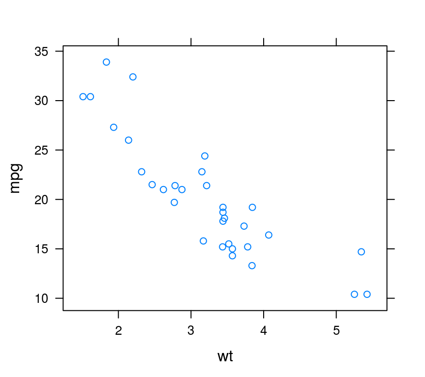
文本型变量也可以用于绘制散点图
xyplot(decrease~treatment, data=OrchardSprays)
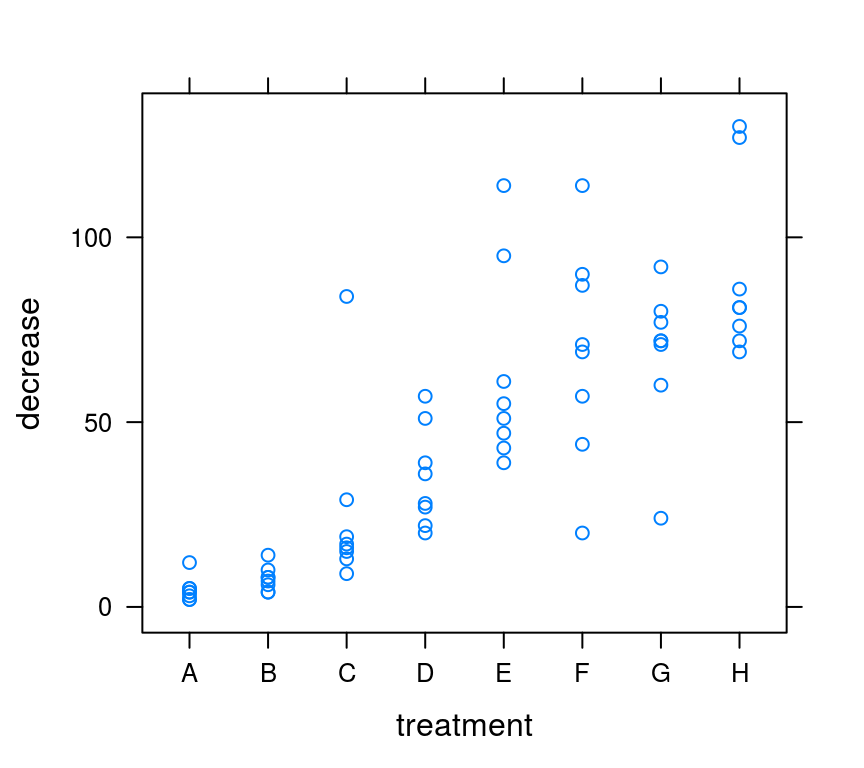
直方图
单变量密度分布
histogram(~mpg, data=mtcars)
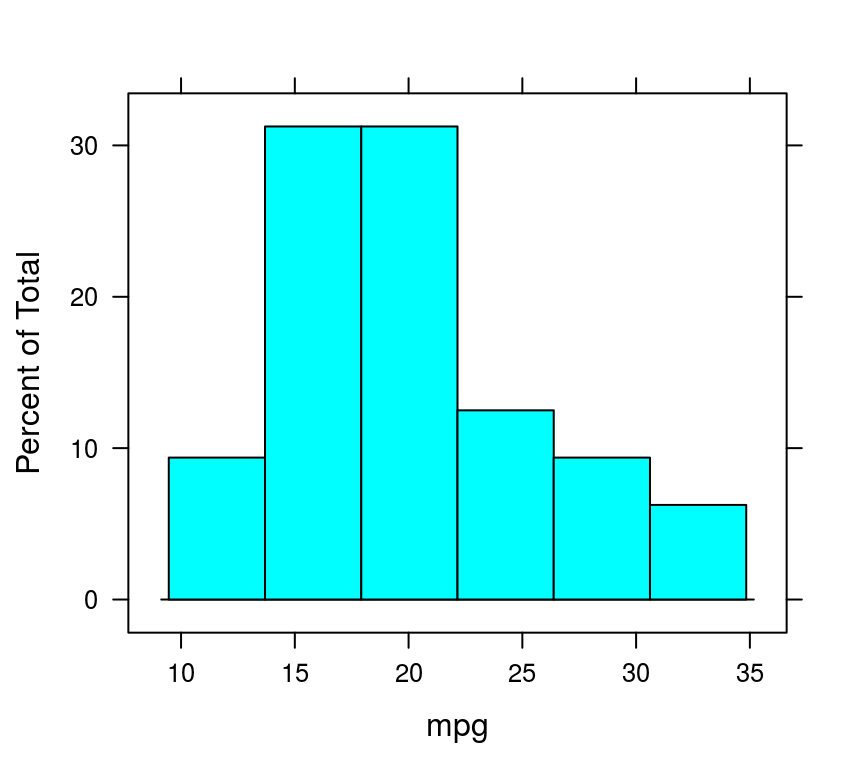
或用密度曲线图
densityplot(~mpg, data=mtcars)

箱式图 boxplot
连续性变量的分布
bwplot(~len, ToothGrowth)
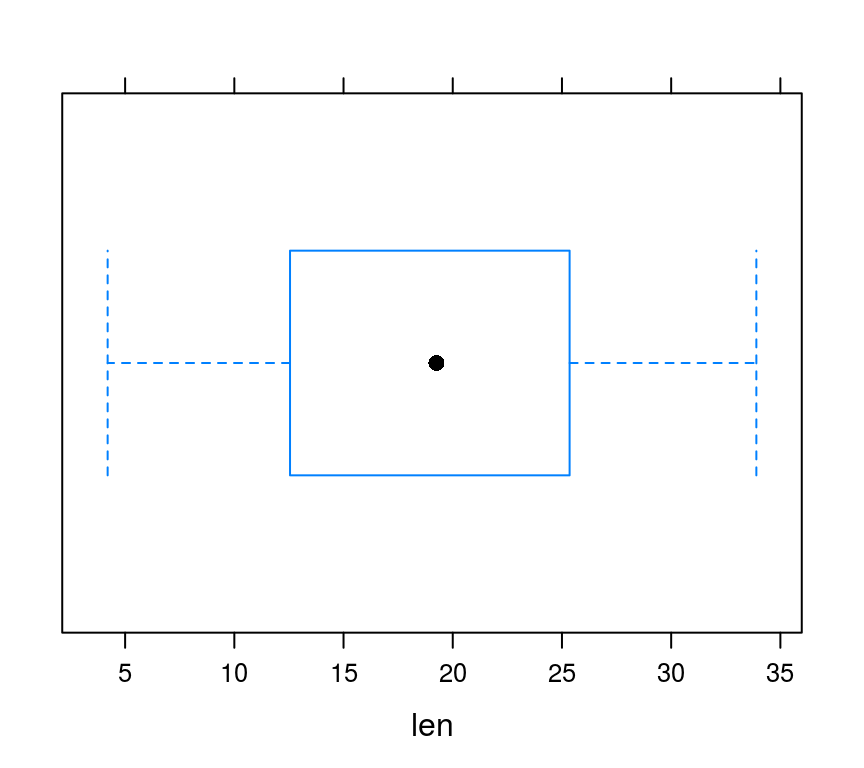
多个箱式图
bwplot(len~dose, data = ToothGrowth,
horizontal=FALSE)

stripplot和dotplot
stripplot和bwplot功能相近
stripplot(len~dose, data = ToothGrowth,
horizontal=FALSE)
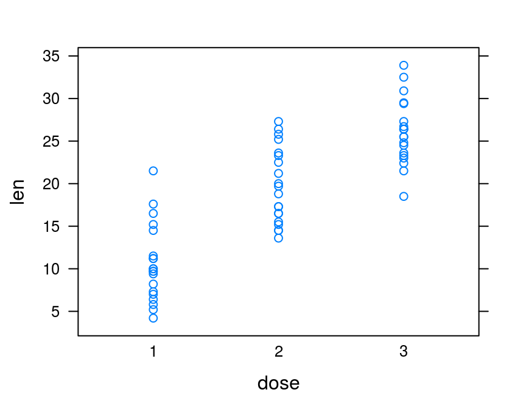
dotplot把点画在琴弦上
dotplot(len~dose, data = ToothGrowth,
horizontal=FALSE)
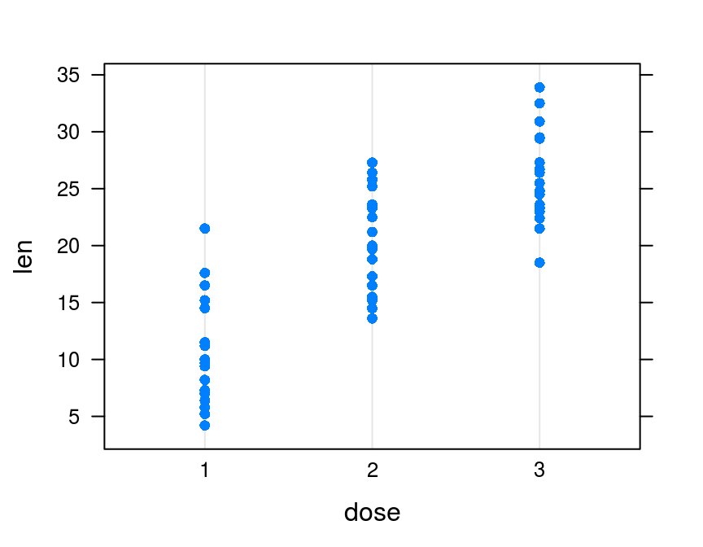
柱/条形图 barplot
文本型变量为y，条图
hp <- data.frame(hp=mtcars$hp,
car=row.names(mtcars))
barchart(car~hp, data=hp)
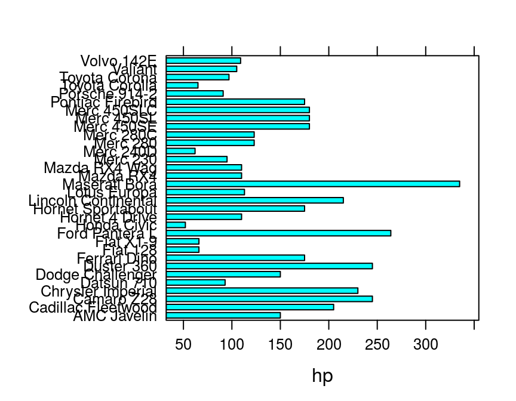
颠倒x和y，柱形图
hp <- data.frame(hp=mtcars$hp,
car=row.names(mtcars))
barchart(hp~car, data=hp)
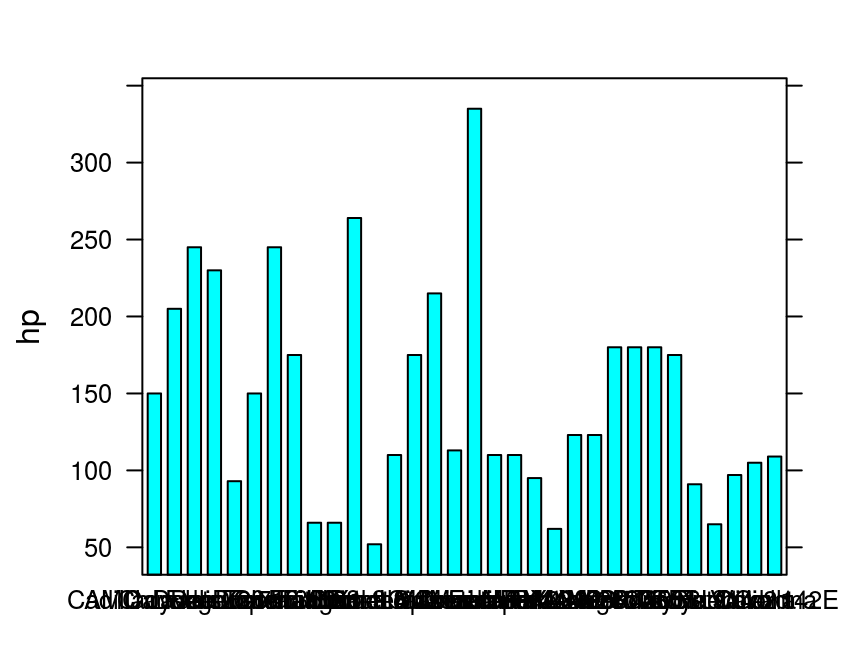
折线图 lines
表示趋势
xyplot(AirPassengers, type="l")
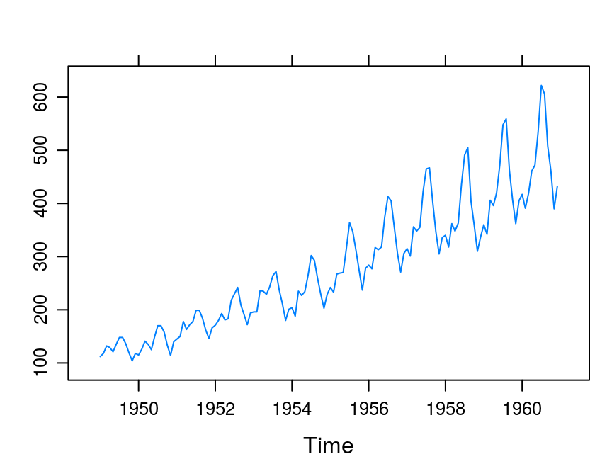
# type类似于base系统
阶梯折线
xyplot(AirPassengers, type='s') # 阶梯图
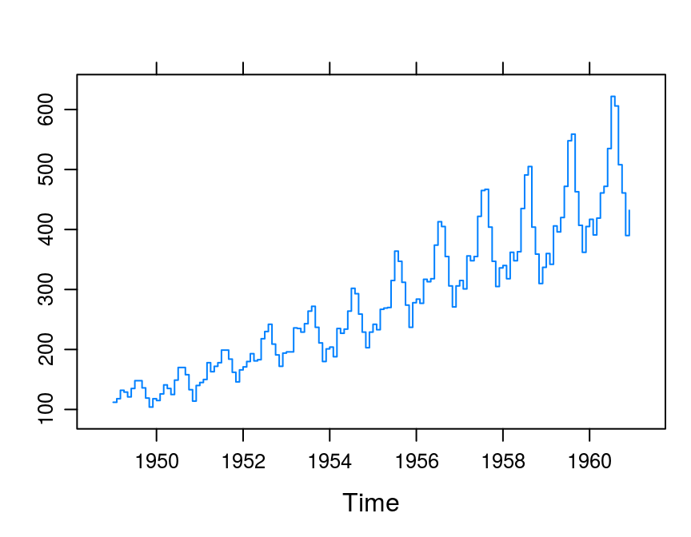
进阶图
散点图矩阵 splom
splom(~iris[1:4], groups=Species, data=iris,
main = "Anderson's Iris Data -- 3 species")
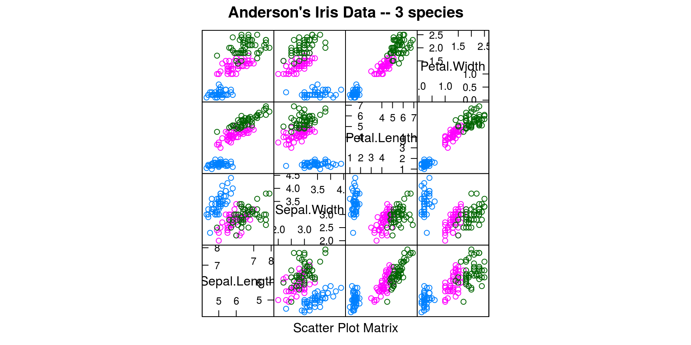
平形图矩阵
Parallel特别适合展示高维数据
parallelplot(~iris[1:4] | Species, data=iris)
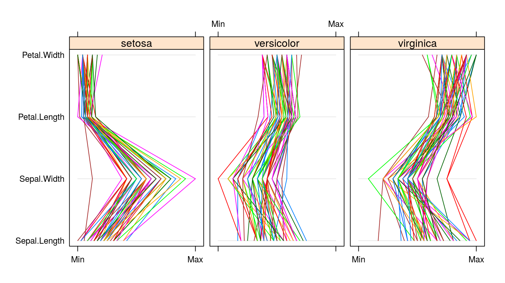
多重面板图
多重面板图是lattice最大的利器
xyplot(Sepal.Width ~ Petal.Width | Species,
data=iris)

xyplot(mpg ~ wt | am * vs, data=mtcars)

## 交叉am和vs
levelplot
下图显示，气温越高、风速越小，则臭氧浓度越高(映射到色阶通道)。
levelplot(Ozone ~ Wind * Temp, data=airquality)
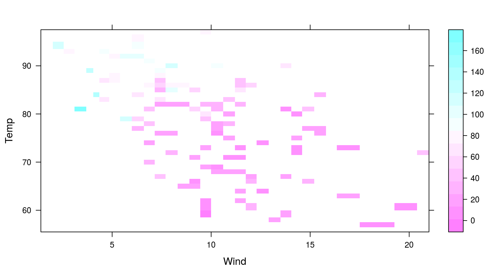
3-D散点图
cloud(Ozone ~ Wind * Temp, data=airquality)

3-D柱形图
library(latticeExtra) cloud(Ozone ~ Wind * Temp, data=airquality, panel.3d.cloud=panel.3dbars)

Thank you!